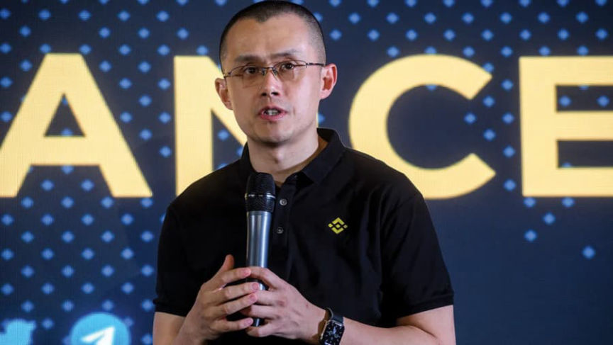
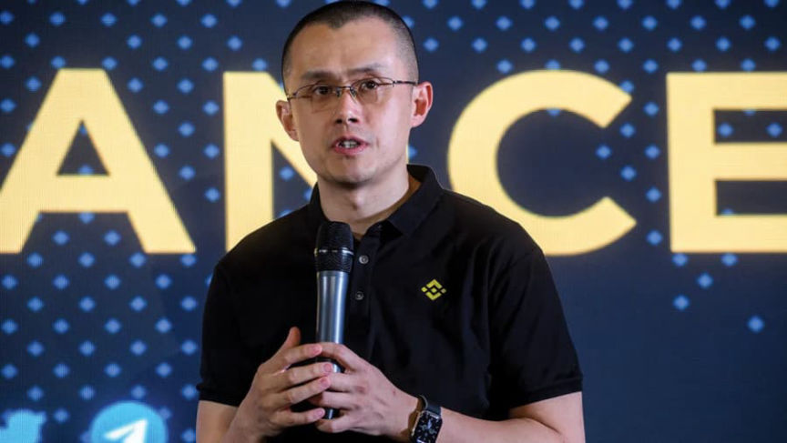

Feds Requested Communications Involving Binance CEO CZ
~2 min read | Published on 2022-09-01, tagged Binance, Cryptocurrency using 336 words.
Federal prosecutors in the United States requested information from Binance about its anti-money laundering system and communications involving the company’s CEO.
According to a request from 2020 seen by Reuters, federal prosecutors asked Binance to provide “extensive internal records about its anti-money laundering checks, along with communications involving its chief executive and founder Changpeng Zhao.”

A Department of Justice branch investigating money laundering asked Binance to turn over messages from 13 Binance employees and executives, including Zhao. The DOJ sought messages about Binance’s ability to detect illegal transactions. Additionally, the DOJ requested messages from the 13 Binance executives that instructed recipients to destroy or alter documents or transfer them out of the U.S.
Reuters sources said the DOJ is investigating whether or not Binance violated the Bank Secrecy Act (BSA).
Binance Chief Communications Officer Patrick Hillmann:
“Regulators across the globe are reaching out to every major crypto exchange to better understand our industry. This is a standard process for any regulated organization and we work with agencies regularly to address any questions they may have. [Binance has] an industry leading global security and compliance team with over 500 employees, including former regulators and law enforcement agents.”
The remainder of the Reuters article is basically the same as many of the recent Reuters articles featuring Zhao and Binance.
For example:
“Binance has an opaque corporate structure. It has declined to give details of the ownership or location of its main Binance.com exchange, which has not accepted customers in the United States since mid-2019. Clients there are instead directed to a separate U.S.-based exchange called Binance.US, which also is controlled by Zhao, regulatory filings show. Binance.US registered with the Treasury in 2019; the main exchange never did so.”

Zhao seems too significant of an entity to face any real trouble for any alleged attempts to avoid U.S. regulations. However, CEOs and other executives of the BitMEX exchange just received probation sentences for BSA violations. Who knows?
Exclusive: U.S. sought records on Binance CEO for crypto money laundering probe | www.reuters.com, archive.is, archive.org
According to a request from 2020 seen by Reuters, federal prosecutors asked Binance to provide “extensive internal records about its anti-money laundering checks, along with communications involving its chief executive and founder Changpeng Zhao.”

Binance CEO Changpeng Zhao
A Department of Justice branch investigating money laundering asked Binance to turn over messages from 13 Binance employees and executives, including Zhao. The DOJ sought messages about Binance’s ability to detect illegal transactions. Additionally, the DOJ requested messages from the 13 Binance executives that instructed recipients to destroy or alter documents or transfer them out of the U.S.
Reuters sources said the DOJ is investigating whether or not Binance violated the Bank Secrecy Act (BSA).
Binance Chief Communications Officer Patrick Hillmann:
“Regulators across the globe are reaching out to every major crypto exchange to better understand our industry. This is a standard process for any regulated organization and we work with agencies regularly to address any questions they may have. [Binance has] an industry leading global security and compliance team with over 500 employees, including former regulators and law enforcement agents.”
The remainder of the Reuters article is basically the same as many of the recent Reuters articles featuring Zhao and Binance.
For example:
“Binance has an opaque corporate structure. It has declined to give details of the ownership or location of its main Binance.com exchange, which has not accepted customers in the United States since mid-2019. Clients there are instead directed to a separate U.S.-based exchange called Binance.US, which also is controlled by Zhao, regulatory filings show. Binance.US registered with the Treasury in 2019; the main exchange never did so.”
A REUTERS SPECIAL REPORT
Zhao seems too significant of an entity to face any real trouble for any alleged attempts to avoid U.S. regulations. However, CEOs and other executives of the BitMEX exchange just received probation sentences for BSA violations. Who knows?
Exclusive: U.S. sought records on Binance CEO for crypto money laundering probe | www.reuters.com, archive.is, archive.org